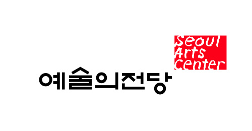

시상 및 기금
금호문화재단은 클래식 음악계를 이끌어갈 인재들을
세계적인 음악가로 성장할 수 있도록 격려합니다
금호음악인상
클래식 분야 최고 권의의 젊은 음악가상금호 음악인상이란?
금호문화재단은 만 30세 미만의 전도유망한 젊은 한국 클래식 기악 연주자 가운데 최근 가장 눈에 띄는 연주 성과를 보여준 젊은 음악인을 선발하는 금호음악인상을 2004년부터 제정하여 시상하고 있습니다.
클래식 음악계의 최고 권위의 상으로 자리매김한 금호음악인상은 클래식 음악 기악 분야 연주자 중 탁월한 음악성으로 남다른 성과를 이룩한 장차 우리나라 클래식 음악계를 이끌어 나갈 연주자를 찾아 포상하고 격려하는 상으로, 이들이 나아가 세계적인 음악가로 성장할 수 있도록 미래지향적 인 상입니다.
금호음악인상 수상자에게는 상금으로 한화 2천만원과 더불어 2년간 비즈니스 클래스 국제선 탑승권이 제공되며, 금호아트홀에서의 독주 기회와 함께 국내외 유수 오케스트라와의 협연 주선 및 해외 음악제 참가 기회를 제공하는 등
금호문화재단의 전폭적인 지원을 받게 됩니다.
역대 수상자
예술의전당 음악영재 캠프&콩쿠르
금호예술기금 사업음악영재 캠프 & 콩쿠르 개최
-
금호문화재단은 더욱 적극적인 클래식 음악 영재의 발굴 및 육성을 통해 한국 클래식 음악 발전에 이바지하고자 30억원을 조성하여 한국을 대표하는 공연장인 예술의전당에 금호예술기금을 기탁하였습니다.
금호문화재단은 예술의전당과 함께 이 기금이 ‘클래식 음악영재의 발굴 및 육성’이라는 목적에 합당하게 사용할 수 있도록 협의하였고, 그 결과 2009년에 제1회 예술의전당 음악영재 캠프&콩쿠르가 개최되었습니다.
- 
음악캠프 & 콩쿠르 융합교육
- 기존의 콩쿠르 시상식
- 더보기
- 자유로운 음악캠프 형식
기존의 콩쿠르 개념을 탈피한 독창적인 구조
격년제로 운영되는 예술의전당 음악영재 캠프&콩쿠르에서는 만20세 미만의 피아노, 바이올린, 첼로의 3개 부문의 음악영재 참가자들에게 세계적 인 음악가이자 교육자로 명성이 높은 교수들로부터 직접 지도 및 조언을 받는 특별한 기회를 제공합니다.
예술의전당 음악영재 캠프&콩쿠르에서는 각 악기 부문에서 1명의 음악영재를 선발하고, 이들 중 가장 우수한 음악영재 1명에게 ‘금호영재대상’을 수여합니다. 수상자에게는 예술의전당 기획공연 협연 기회와 금호아트홀에서의 독주회 기회가 부상으로 주어집니다.